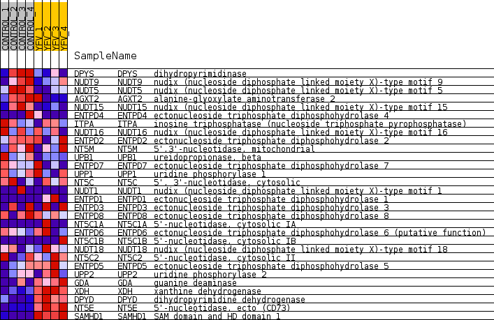
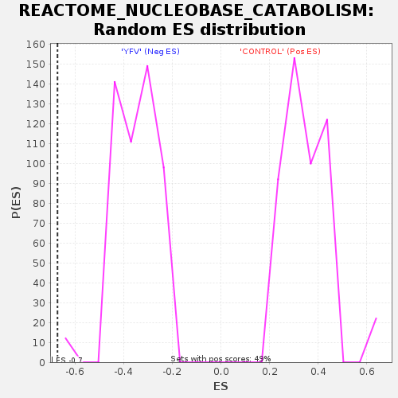

Profile of the Running ES Score & Positions of GeneSet Members on the Rank Ordered List
| Dataset | MATRIZ_GSE99081_collapsed_to_symbols.gsea_CLASE_99081.cls#CONTROL_versus_YFV |
| Phenotype | gsea_CLASE_99081.cls#CONTROL_versus_YFV |
| Upregulated in class | YFV |
| GeneSet | REACTOME_NUCLEOBASE_CATABOLISM |
| Enrichment Score (ES) | -0.6715586 |
| Normalized Enrichment Score (NES) | -1.9129995 |
| Nominal p-value | 0.0 |
| FDR q-value | 0.015490715 |
| FWER p-Value | 0.023 |
| SYMBOL | TITLE | RANK IN GENE LIST | RANK METRIC SCORE | RUNNING ES | CORE ENRICHMENT | |
|---|---|---|---|---|---|---|
| 1 | DPYS | dihydropyrimidinase | 2566 | 0.402 | -0.1307 | No |
| 2 | NUDT9 | nudix (nucleoside diphosphate linked moiety X)-type motif 9 | 2588 | 0.398 | -0.1047 | No |
| 3 | NUDT5 | nudix (nucleoside diphosphate linked moiety X)-type motif 5 | 2774 | 0.371 | -0.0907 | No |
| 4 | AGXT2 | alanine-glyoxylate aminotransferase 2 | 3220 | 0.318 | -0.0963 | No |
| 5 | NUDT15 | nudix (nucleoside diphosphate linked moiety X)-type motif 15 | 3239 | 0.316 | -0.0758 | No |
| 6 | ENTPD4 | ectonucleoside triphosphate diphosphohydrolase 4 | 3293 | 0.311 | -0.0578 | No |
| 7 | ITPA | inosine triphosphatase (nucleoside triphosphate pyrophosphatase) | 3395 | 0.299 | -0.0435 | No |
| 8 | NUDT16 | nudix (nucleoside diphosphate linked moiety X)-type motif 16 | 4202 | 0.227 | -0.0777 | No |
| 9 | ENTPD2 | ectonucleoside triphosphate diphosphohydrolase 2 | 4377 | 0.214 | -0.0737 | No |
| 10 | NT5M | 5',3'-nucleotidase, mitochondrial | 4384 | 0.213 | -0.0595 | No |
| 11 | UPB1 | ureidopropionase, beta | 4869 | 0.169 | -0.0777 | No |
| 12 | ENTPD7 | ectonucleoside triphosphate diphosphohydrolase 7 | 5716 | 0.097 | -0.1232 | No |
| 13 | UPP1 | uridine phosphorylase 1 | 5861 | 0.087 | -0.1261 | No |
| 14 | NT5C | 5', 3'-nucleotidase, cytosolic | 6316 | 0.051 | -0.1506 | No |
| 15 | NUDT1 | nudix (nucleoside diphosphate linked moiety X)-type motif 1 | 7412 | 0.000 | -0.2182 | No |
| 16 | ENTPD1 | ectonucleoside triphosphate diphosphohydrolase 1 | 9322 | -0.000 | -0.3359 | No |
| 17 | ENTPD3 | ectonucleoside triphosphate diphosphohydrolase 3 | 9871 | -0.020 | -0.3684 | No |
| 18 | ENTPD8 | ectonucleoside triphosphate diphosphohydrolase 8 | 10358 | -0.048 | -0.3950 | No |
| 19 | NT5C1A | 5'-nucleotidase, cytosolic IA | 10376 | -0.050 | -0.3927 | No |
| 20 | ENTPD6 | ectonucleoside triphosphate diphosphohydrolase 6 (putative function) | 10470 | -0.058 | -0.3945 | No |
| 21 | NT5C1B | 5'-nucleotidase, cytosolic IB | 10694 | -0.075 | -0.4031 | No |
| 22 | NUDT18 | nudix (nucleoside diphosphate linked moiety X)-type motif 18 | 10770 | -0.082 | -0.4021 | No |
| 23 | NT5C2 | 5'-nucleotidase, cytosolic II | 11402 | -0.139 | -0.4315 | No |
| 24 | ENTPD5 | ectonucleoside triphosphate diphosphohydrolase 5 | 11699 | -0.164 | -0.4385 | No |
| 25 | UPP2 | uridine phosphorylase 2 | 12664 | -0.261 | -0.4801 | No |
| 26 | GDA | guanine deaminase | 15768 | -1.060 | -0.5989 | Yes |
| 27 | XDH | xanthine dehydrogenase | 15981 | -1.511 | -0.5084 | Yes |
| 28 | DPYD | dihydropyrimidine dehydrogenase | 16018 | -1.667 | -0.3963 | Yes |
| 29 | NT5E | 5'-nucleotidase, ecto (CD73) | 16167 | -2.946 | -0.2035 | Yes |
| 30 | SAMHD1 | SAM domain and HD domain 1 | 16172 | -3.033 | 0.0041 | Yes |

